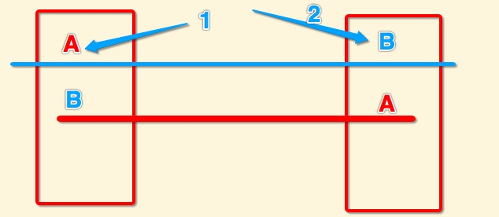

多线程与线程安全
1.线程安全的维度
1.线程间安全，不会产生线程死锁、由线程操作产生的异常崩溃
2.线程数据安全，对于同时可读可写的数据，需要有同步操作
2. 看一个多个线程同时读写操作一个变量的例子
@property (nonatomic,strong)NSString *target;
// queue 是并发对垒
for (int index = 0; index < 1000; index++) {
dispatch_async(queue, ^{
//如果是并行队列里边 改变同一块内存要加锁
self.target = [NSString stringWithFormat:@"ksddkjalkjd%d",index];
NSLog(@"%@",self.target);
});
}
这段代码存在的问题
1.target 打印的数据有肯能不是按顺序的，也就是说数据会错乱
2.程序崩溃. 原因：在iOS中 一个变量在获取新值之前要释放以前的旧址
在并行访问同一块资源的时候 如果释放了一次旧址 再次释放就会导致过度释放
过度释放会让程序崩溃 报BAD_ACCESS_ADDRESS
这类问题我们需要用线程同步来处理，线程同步常用方法有:
- 互斥锁和读写锁：提供对临界资源的保护，当多线程试图访问临界资源时，都必须通过获取锁的方式来访问临界资源。（临界资源：是被多线程共享的资源）当读写线程获取锁的频率差别不大时，一般采用互斥锁，如果读线程访问临界资源的频率大于写线程，这个时候采用读写锁较为合适，读写锁允许多个读线程同时访问临界资源，读写线程必须互斥访问临界资源。读写锁的实现采用了互斥锁，所以在读写次数差不多的情况下采用读写锁性能没有直接采用互斥锁来的高。
- 条件变量：提供线程之间的一种通知机制，当某一条件满足时，线程A可以通知阻塞在条件变量上的线程B，B所期望的条件已经满足，可以解除在条件变量上的阻塞操作，继续做其他事情。
- 信号量：提供对临界资源的安全分配。如果存在多份临界资源，在多个线程争抢临界资源的情况下，向线程提供安全分配临界资源的方法。如果临界资源的数量为1，将退化为锁。
- 令牌：一种高级的线程同步的方法。它既提供锁的安全访问临界资源的功能，又利用了条件变量使得线程争夺临界资源时是有序的。
3.线程同步导致死锁
例如: 1.线程循环等待导致死锁
//当前是主队列
dispatch_sync(dispatch_get_main_queue(), ^{
});
// 如果是非主队列也如此
dispatch_queue_t queue = dispatch_queue_create("gcd", DISPATCH_QUEUE_SERIAL); dispatch_async(queue, ^{
NSLog(@"外边的1 %@",[NSThread currentThread]);
dispatch_sync(queue, ^{
NSLog(@"里边的 %@",[NSThread currentThread]);
});
NSLog(@"外边的2 %@",[NSThread currentThread]);
});
2.线程同步时资源竞争
例如 下图左右两个线程要使用独立的两个资源A和B，而且只有在代码块结束后才让别的线程使用A、B两种资源，当A和B分别被这两个线程得到后，在执行1和2两步后，线程会死锁，一直等待他们需要的资源

解决方法
1.资源的加锁范围尽量缩小，也就是可以不占用后立马释放
2.加锁时限（线程尝试获取锁的时候加上一定的时限，超过时限则放弃对该锁的请求，并释放自己占有的锁）
3. 死锁检测是一个更好的死锁预防机制，它主要是针对那些不可能实现按序加锁并且锁超时也不可行的场景。